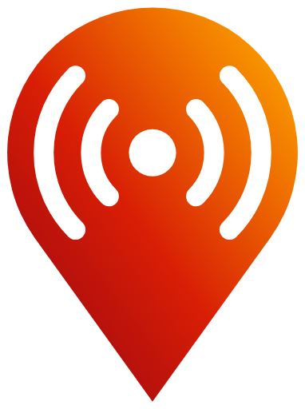

Logo kit sample
How each asset looks in a page. The header mark above is inline SVG with pulsing arcs.
Pulsing SVG as <img> —
web/pskreporter-mark-pulse.svgStatic SVG —
web/pskreporter-mark.svg
PNG —
web/pskreporter-mark-512.pngLockup PNG —
wordmark/pskreporter-lockup-dark.pngOn dark —
wordmark/pskreporter-lockup-white.pngIcons —
icons/